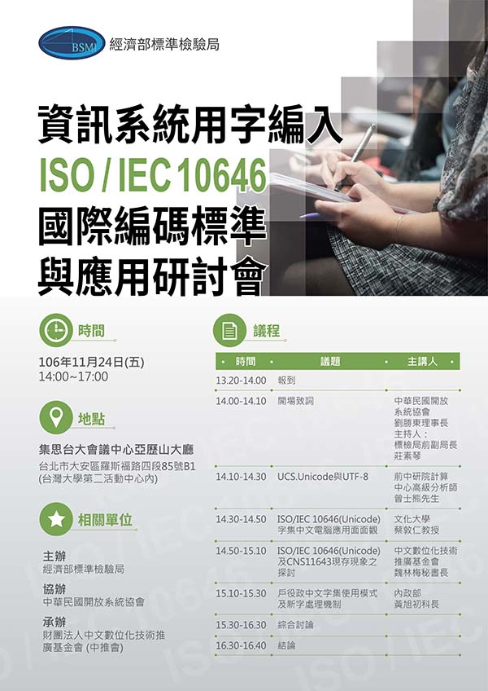

| 中文編碼與應用研討會 |

|
| 作者 Administrator | ||||||||||||||||||||||||||||||||
| 2017/10/28, Saturday | ||||||||||||||||||||||||||||||||
|
資訊系統用字編入ISO/IEC 10646國際編碼標準 與應用研討會
主辦單位：經濟部標準檢驗局 報名網址
地點： 集思台大會議中心亞歷山大廳 台北市羅斯福路四段85號B1 (捷運公館站旁) 時間：106年11月24日(五) 14:00~17:00 |
||||||||||||||||||||||||||||||||

| 活動議程 |
| 時 間 | 議題 | 主講人 |
|---|---|---|
| 13:30~14:00 | 來賓報到 | |
| 14:00~15:10 |
開場致詞 |
劉勝東 理事長 |
| 14:10~14:30 |
Unicode發展現況及展望 |
曾士熊專家 |
| 14:30~14:50 |
Unicode字集中文電腦應用面面觀 |
蔡敦仁教授 |
| 14:50~15:10 |
字形與編碼：Unicode及CNS11643現存現象之探討 |
魏林梅秘書長 |
| 15:10~15:30 |
戶役政中文字集使用模式及新字處理機制 |
內政部黃旭初科長 |
| 15:30~16:30 | 綜合討論 | |
| 16:30~16:40 | 結論 | |
| 16:40~ | 賦歸 | |
| < 前一個 | 下一個 > |
|---|
Copyright � 2019 COSA - 中華民國開放系統協會. Designed by JoomlArt.com
Joomla!是基於GNU/GPL授權的自由軟體. 中文版本由TaiwanJoomla製作.